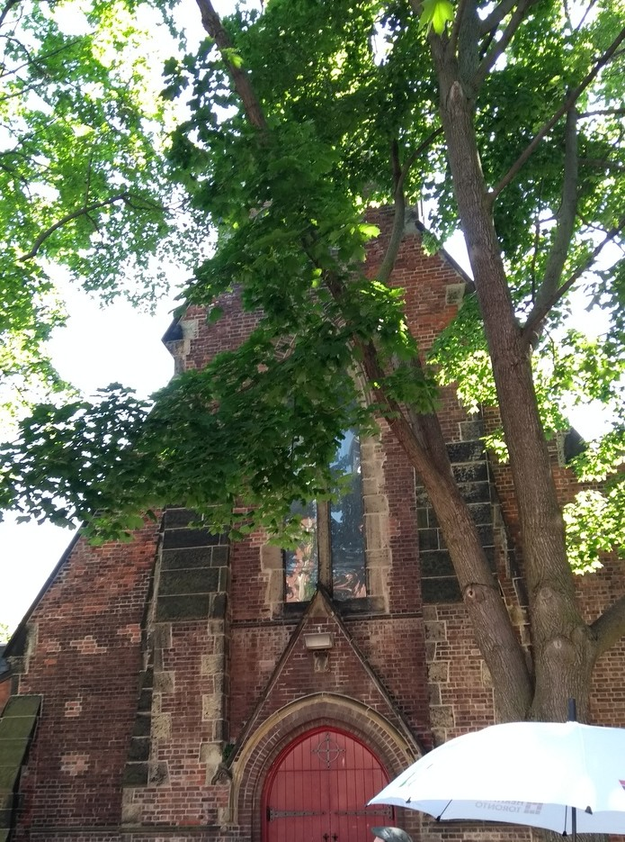
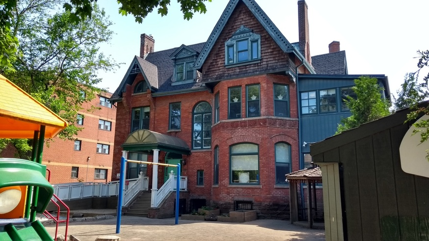
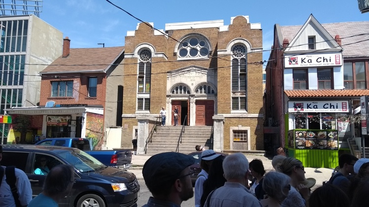

Heritage walk in Kensington Market
This morning’s Heritage Walk was in Kensington Market. I grabbed a few photos.
This is the Church of St Stephen-in-the-Fields, on College between Spadina and Bathurst:

Though it is now thoroughly of downtown, when it was built (1857), it was literally in the fields. However, its mission is still the same as it was, to help new immigrants and those of the area that need help. This was a theme of the walk: the various waves of immigrants who settled the area built institutions to help their fellows out.
This is Canada’s first-ever daycare:

It became so during WW2. With the men away at war, and the women working in the factories, someone needed to look after the children. It is now a Montessori school (fittingly).
Kensington Market is hard to get a good picture of, despite everything being at close quarters. Our walk leader treated us to a rendition of the theme song of the TV show King of Kensington, to which we as audience had to contribute the “What a guy!” at the end. The market still looks much as it does there. The history is that the (then Jewish) immigrants started by selling things out of their houses, and then they needed more space, so they made the ground floors of their houses into stores and lived upstairs. It still looks much like that now.
There were apparently 97 synagogues in Kensington at one time. This is one of them:
 It is now rather incongruously on the edge of Chinatown, opposite what used to be the Bright Pearl restaurant (which was before that the Labour Lyceum, a home for trades unions, another part of the Kensington story). To the left, just out of shot, is the Kensington Market parking garage, whose floors are labelled by food items, so that to find your car, you have to remember, “oh, I’m parked on Bread”.
After the walk, I got Chinese pastries at Ding Dong Bakery.